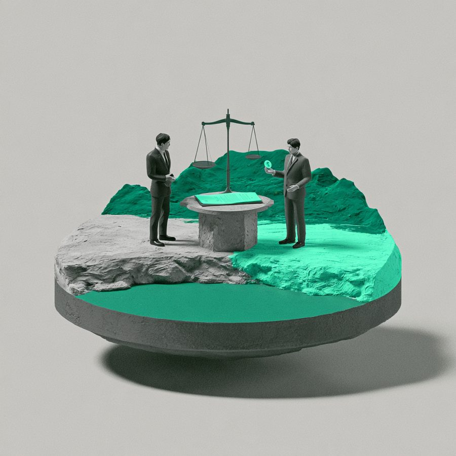

약정금 청구 소송 승소
의뢰인은 분행대행사 직원으로 활동하면서 신축 상가 분양 중개 활동을 활발히 하였습니다. 법원은 본 변호사의 주장을 인용하여, 전속계약서의 내용에 기존에 성료한 호실에 대한 수수료 지급 의무가 포함되어 있다고 판단하면서, 원고의 청구를 전부 인용하였습니다.

금전피해 · 계약・사업
—
승소
이 사건의 쟁점
의뢰인은 분행대행사 직원으로 활동하면서 신축 상가 분양 중개 활동을 활발히 하였습니다. 그런데, 분양대행사 전체의 실적이 좋지 않자, 시행사 측의 상무가 의뢰인에게 연락을 하여 직접 의뢰인과 전속계약을 체결하고, 의뢰인이 이미 성공한 호실 및 앞으로 진행할 분양 중개에 대하여 수수료를 직접 지급하겠다고 약정하였습니다. 의뢰인은 위 상무에게 이미 성료한 호실에 대한 수수료 지급을 수차례 요청하였으나, 위 상무는 전속계약에 기존에 성료된 호실과 관련된 중개수수료는 포함된 것이 아니라는 취지로 그 수수료 지급 요청을 거절하였고, 의뢰인은 위 상무를 상대로 소를 제기하였습니다.
본 변호사의 전략 변호사 김용석
전속계약서의 내용에, 의뢰인이 성료한 호실이 명확히 기재되어 있지 않고, 그 내용이 불명확하였기 때문에, 계약서 작성 경위를 토대로 계약서의 내용에 이미 성료한 호실 중개 수수료 지급 내용이 포함되어 있다는 취지의 주장을 하였습니다. 이러한 주장을 입증하기 위하여, 계약 당시 참여하였던 목격자의 증언, 위 상무와의 녹취록을 증거로 제출하였습니다.
결과 및 판단
법원은 본 변호사의 주장을 인용하여, 전속계약서의 내용에 기존에 성료한 호실에 대한 수수료 지급 의무가 포함되어 있다고 판단하면서, 원고의 청구를 전부 인용하였습니다.
법률 인사이트
흔히 계약서를 작성할 때, 모든 내용을 자세히 기재하면 좋겠지만, 그렇게 되면 계약서의 내용이 너무 방대해질 수 있습니다. 그렇기에, 핵심적인 내용을 기재하는 경우가 많은데, 이때에 계약의 논리적, 합리적 해석이 필요합니다. 즉, 계약서에는 명시적으로 기재되어 있지 않지만, 주장하는 내용이 계약의 내용에 포함될 수 있는지에 관하여, 계약서 작성 경위, 작성 당시의 목격자, 그 이후의 경위에 관하여 주장, 입증을 하여 계약서의 합리적 해석상 계약서에 기재되어 있지 않더라도, 그 계약 내용에 포함되어 있다는 점을 주장하는 것이 필요합니다.